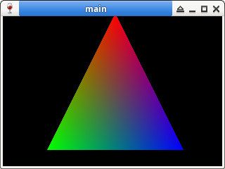

Steward
分享是一種喜悅、更是一種幸福
程式語言 - Wine - C/C++ - OpenGL 1.0 - Scale Vertex
參考資訊：
https://www.winehq.org/
https://github.com/gamedev-net/nehe-opengl
https://wiki.winehq.org/Winelib_User%27s_Guide
main.c
#include <math.h>
#include <stdbool.h>
#include <windows.h>
#include <GL/gl.h>
#include <GL/glu.h>
#define W 320
#define H 240
static HDC hDC = NULL;
static HGLRC hRC = NULL;
static WNDPROC defWndProc = NULL;
static LRESULT CALLBACK WndProc(HWND hWnd, UINT uMsg, WPARAM wParam, LPARAM lParam)
{
switch (uMsg) {
case WM_CLOSE:
wglMakeCurrent(NULL, NULL);
wglDeleteContext(hRC);
ReleaseDC(hWnd, hDC);
DestroyWindow(hWnd);
return 0;
case WM_DESTROY:
PostQuitMessage(0);
return 0;
}
return CallWindowProc(defWndProc, hWnd, uMsg, wParam, lParam);
}
int WINAPI WinMain(HINSTANCE hInstance, HINSTANCE hPrevInstance, LPSTR lpCmdLine, int nCmdShow)
{
HWND hWnd = NULL;
GLuint fmt = 0;
PIXELFORMATDESCRIPTOR pfd = { 0 };
GLdouble nearPlane = 0.1;
GLdouble farPlane = 100.0;
GLdouble top = nearPlane * tan(45.0 * 3.14159 / 360.0);
GLdouble right = top * ((GLfloat)W / (GLfloat)H);
pfd.nSize = sizeof(PIXELFORMATDESCRIPTOR);
pfd.nVersion = 1;
pfd.dwFlags = PFD_DRAW_TO_WINDOW | PFD_SUPPORT_OPENGL | PFD_DOUBLEBUFFER;
pfd.iPixelType = PFD_TYPE_RGBA;
pfd.cColorBits = 16;
pfd.cDepthBits = 16;
pfd.iLayerType = PFD_MAIN_PLANE;
hWnd = CreateWindow(WC_DIALOG,
"main",
WS_OVERLAPPEDWINDOW | WS_VISIBLE,
0,
0,
W,
H,
NULL,
NULL,
NULL,
NULL
);
defWndProc = (WNDPROC)SetWindowLongPtr(hWnd, GWLP_WNDPROC, (long int)WndProc);
hDC = GetDC(hWnd);
fmt = ChoosePixelFormat(hDC, &pfd);
SetPixelFormat(hDC, fmt, &pfd);
hRC = wglCreateContext(hDC);
wglMakeCurrent(hDC, hRC);
glViewport(0, 0, W, H);
glMatrixMode(GL_PROJECTION);
glFrustum(-right, right, -top, top, nearPlane, farPlane);
glMatrixMode(GL_MODELVIEW);
glLoadIdentity();
MSG msg = { 0 };
while (GetMessage(&msg, NULL, 0, 0)) {
DispatchMessage(&msg);
glLoadIdentity();
glTranslatef(0.0f, 0.0f, -3.0f);
glScalef(2.0f, 2.0f, 2.0f);
glBegin(GL_TRIANGLES);
glColor3f(1.0f, 0.0f, 0.0f);
glVertex3f(0.0f, 0.5f, 0.0f);
glColor3f(0.0f, 1.0f, 0.0f);
glVertex3f(-0.5f, -0.5f, 0.0f);
glColor3f(0.0f, 0.0f, 1.0f);
glVertex3f(0.5f, -0.5f, 0.0f);
glEnd();
SwapBuffers(hDC);
}
return 0;
}
編譯、執行
$ winegcc main.c -o main.exe -lGL -lGLU -lgdi32 -lopengl32 $ wine main.exe
